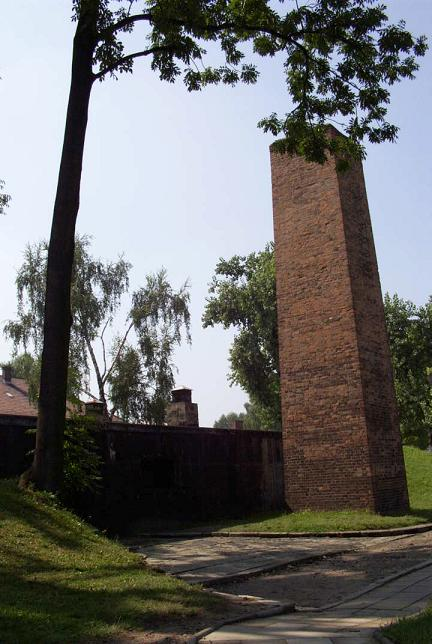
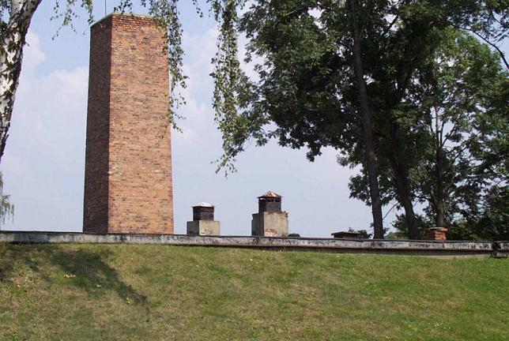

A relatively small gas chamber and crematorium, covered by grass on the side facing the prisoner barracks, operated from August 1940 until July 1943. It was designed by the Germans to handle up to 340 people per day, but these facilities soon proved insufficient, and thus Auschwitz II (Birkenau) was built with industrial-size cremation facilities. The SS used Zyklon-B gas, dropped through the small chimneys on the roof, to kill Jews and Soviet prisoners of war immediately upon arrival, as well as infirm slave laborers. The facility, which had been dismantled by the retreating Nazis, has been reconstructed using mainly original components.


Go Inside
Back to Auschwitz
Back to the trip homepage